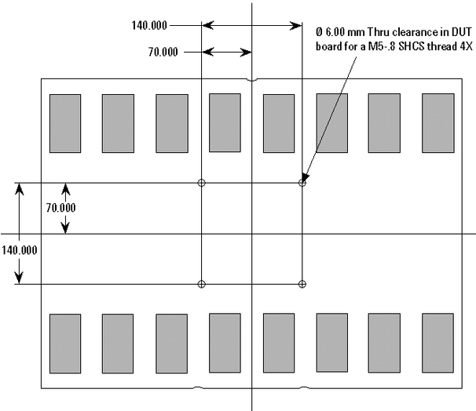
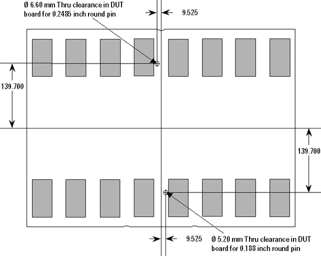
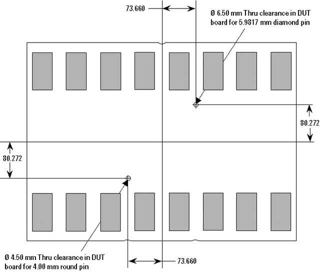

DUT board stiffener clearance holes
The following figures display clearance holes that should be put in each DUT board for both small and large DUT boards.
The figure below shows the hole pattern for accommodating Advantest stiffener inlays.

The figure below shows the hole pattern for accommodating the Delta Flex seal block adapter. Without this pattern, you cannot dock to the Flex handler using the seal block adapter.

The figure below shows the hole pattern for accommodating the Castle seal block adapter. Without this pattern, you cannot dock to Castle handlers.

Functional changes
- Introduced before SmarTest 6.3.2